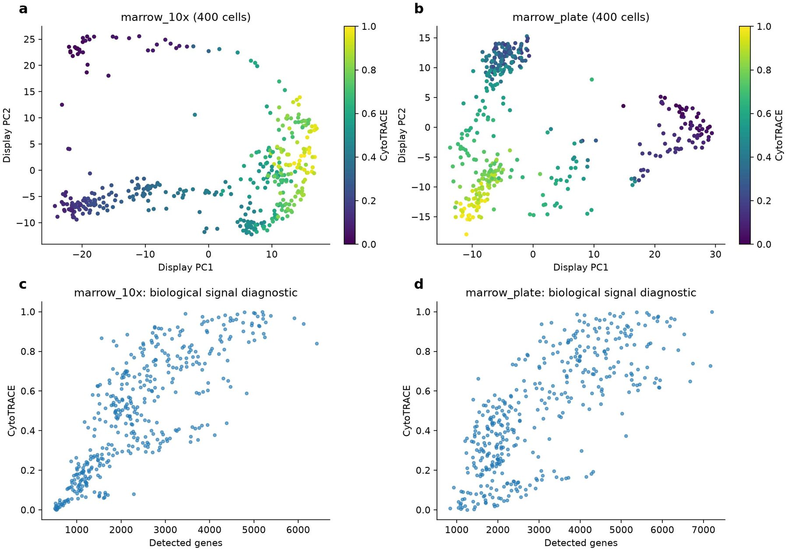
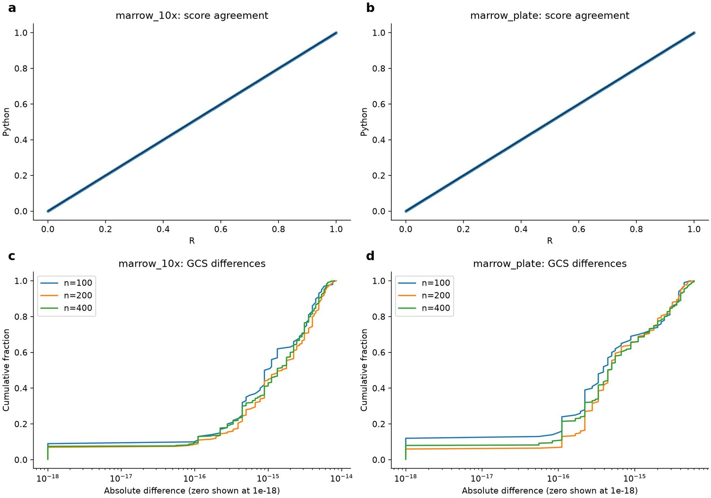
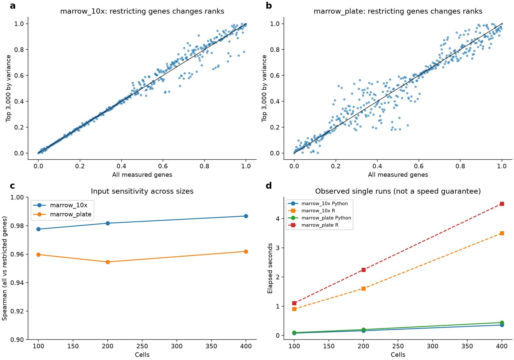

Same-input R validation of the CytoTRACE Python core
Affiliations
- 1 School of the First Clinical Medical Sciences, Wenzhou Medical University, Wenzhou 325000, China
- 2 Department of Genetics, Stanford University, Stanford, CA 94305, USA
- 3 OmicVerse, Inc., San Francisco, CA 94114, USA
OmicVerse Technical Reports (2026)Cite this article
Download PDFAbstract
We evaluate the supported single-batch CytoTRACE Python core against original R on two real marrow datasets at 100, 200 and 400 cells. All six comparisons have identical ranks and detected-gene counts, with maximum score difference 5.55e-16. Restricting inputs to 3,000 high-variance genes changes rankings substantially more than cross-language numerical error. Three multi-panel figures separate real-data displays, stage-level numerical agreement, input sensitivity and descriptive execution times. Fast mode, batch correction and broader biological validation remain outside the measured scope.
- Python
- R
- reproducibility
- validation
Introduction
CytoTRACE estimates relative differentiation potential by combining detected-gene counts with a correlated expression signature and smoothing across transcriptionally similar cells1. Its output is an ordering within the analyzed population, not calibrated developmental time. A native Python implementation is useful when counts and downstream analyses already reside in AnnData: scoring can run without an R process or cross-language object conversion. Removing that runtime dependency does not remove the need to validate the translation.
This report evaluates the single-batch, non-subsampled core of pycytotrace-bio. ComBat, fast subsampling and iCytoTRACE are outside its implemented scope. We compare the Python core with original R on two real expression datasets at three cell-subset sizes. We separately examine gene-input restriction, because a faithful translation can still give a different answer when supplied with a different matrix. Embeddings are used only for display and never enter the score.
Implementation
Matrix contract and preprocessing
The entry point accepts genes by cells and optional identifiers. OmicVerse transposes its cells-by-genes matrix at the backend boundary and now forwards both sets of identifiers. Gene names are necessary for ERCC filtering. The complete measured gene axis should remain available until the algorithm performs its own selection: a counts layer is subset together with AnnData and cannot recover previously removed genes.
The Python default explicitly interprets counts. input_scale='auto' reproduces the R heuristic that exponentiates an input whose maximum is below 50; an explicit log2 option is also available. These interpretations are not interchangeable for low-depth count matrices. The benchmark uses the R-compatible option and records maxima. All six matrices have maxima above 50, so this heuristic does not exponentiate them. This benchmark restriction does not validate the heuristic for every input.
Zero-variance genes and ERCC rows are removed. Cells with at most ten detected genes are filtered and later restored as missing outputs in their original positions. Sequencing-depth normalization scales each retained cell to one million counts before log2 transformation. Census normalization rescales inverse-log relative abundances to the number of detected genes and reapplies log2 transformation. Detected-gene counts therefore affect both the signature and normalization.
Signature and smoothing
Genes expressed in at least 5% of retained cells are eligible for variable-gene selection. Dispersion is variance divided by mean; genes at or above the top-1,000 cutoff are retained, including ties. The prevalence threshold is not rounded down. Cell-cell Pearson correlations define a similarity matrix whose mean is computed before zeroing its diagonal. Negative and below-cutoff correlations are zeroed, then rows are normalized; empty rows remain zero.
The gene-count signature, GCS, averages normalized expression of the 200 genes most correlated with detected-gene counts. Nonnegative least squares fits GCS using the cleaned similarity matrix. The fitted signature is diffused with 0.9 weight on propagation and 0.1 on the initial fit, stopping at mean absolute update below 1e-6 or 10,000 iterations. Values are ranked and rescaled to [0,1]. NumPy and SciPy supply the numerical operations2,3. A shared mathematical objective does not imply bit-identical results across solvers or BLAS implementations.
Implementation review corrected ERCC and low-quality-cell handling, prevalence rounding and tied dispersions. Plotting imports were made lazy so numerical scoring does not require a plotting extra. The former synthetic “exact match” test was renamed: association with gene detection is a sanity check, not an independently executed R comparison.
Benchmark design
The original R function is pinned to gunsagargulati/CytoTRACE@f4ff6c0ab93cc704eef44e17adcd5c6baf09703a. We used its marrow_10x_expr and marrow_plate_expr datasets, with 13,526 and 17,479 input genes. R seed 17 selected 100, 200 and 400 cells without replacement, sorting selected indices back into source order. Every input gene was preserved before algorithmic filtering. The exact matrices were exported for Python, avoiding cross-language sampling differences.
R ran with enableFast=FALSE, one core and no batch labels. Outputs compared were detected counts, GCS, scores, ranks and gene-score correlations. Six subsets from two datasets are not six independent biological cohorts; repeated sizes must not be counted as independent replicates. Separate existing controls append an ERCC row and a five-detected-gene cell to a 120-cell real fixture, testing filtering and output alignment rather than biological accuracy.

Results
Direct agreement at three sizes
All six comparisons returned identical ranks and detected counts. Maximum score differences ranged from 4.72e-16 to 5.55e-16; the maximum GCS difference was 8.22e-15. Gene-score correlations differed by at most 3.89e-15. Score Spearman agreement was one within floating-point precision. These results support the specified single-batch cases rather than universal bit equivalence.
| Output | Maximum difference | Evaluation scope |
|---|---|---|
| Detected counts | 0 | Both datasets, all sizes |
| Ranks | 0 | Both datasets, all sizes |
| Normalized score | 5.55e-16 | All finite scores |
| GCS | 8.22e-15 | All retained cells |
| Gene-score correlation | 3.89e-15 | Shared finite gene correlations |

Restricting input genes changes the result
Repeating Python scoring with only the 3,000 genes of highest sample variance gave Spearman agreement with full-gene scores of 0.9546–0.9868. This is a deliberately simple restriction diagnostic, not a reproduction of every HVG implementation. Its effects are much larger than the R/Python numerical differences. It demonstrates why the tutorial input must be explicit, but does not identify which individual score changes are biologically correct.
The corrected OmicVerse pancreas tutorial retains all 27,998 genes for a deterministic 300-cell teaching subset and uses supplied PCA/UMAP only for display. This establishes integration execution; it is not counted among the direct R benchmarks. Subset-relative scores should not be presented as results for the whole cohort, and changing a cell population can change its relative ordering even with unchanged code.
Observed execution cost
Python calls took approximately 0.08–0.44 seconds and R calls 0.91–4.51 seconds. Calls exclude CSV reading and writing; Python BLAS/OpenMP limits were set to one. These are single observations, not repeated randomized timing trials. Initial library effects, timer granularity and BLAS differences limit interpretation. We show the observations without asserting a portable speedup. Dense cell-cell similarities and the NNLS solve remain scaling concerns well beyond the 400-cell maximum examined here.

Limitations and practical use
The matrices come from the same upstream project's marrow examples and do not represent all tissues, platforms or normalization choices. No experiment validates batch correction, iCytoTRACE or fast subsampling. Degenerate constant scores, unusual missing values and extreme input ranges require separate contracts. The tests cannot establish biological ground truth for differentiation, nor can they convert gene-count association into an independent developmental annotation.
The supported conclusion is specific: the implemented core agrees with original R on shared real matrices at the examined sizes, while gene restriction changes scores materially. Users should preserve the full measured input, choose its scale explicitly, retain identifiers and document whether scoring concerns the full cohort or a subset. Releases should keep the numerical fixtures and integration tests, and name unsupported modes instead of claiming unrestricted replacement of the R package.
Data and code availability
The reproduction bundle contains the recorded inputs, reference outputs, scripts and environment details.
The evaluated Python implementation is preserved at the pinned repair revision. The benchmark source hashes identify the exact tested files; inclusion in an upstream release is a separate status.
Inputs and original R code are available at https://github.com/gunsagargulati/CytoTRACE; Python code is at https://github.com/omicverse/py-CytoTRACE. This report evaluates the pinned source revision rather than a released backend version. cyto_reference.R, cyto_compare.py and figures.py in the attached experiment bundle generate the input exports, score tables, metrics and figures. Input matrices, timings and R session information are retained. Experiments used an Intel Core Ultra 9 285K Windows workstation. Each plot is saved as a raster preview and vector PDF.
Conflicts of interest
H.Z. and Z.Z. are affiliated with OmicVerse, Inc.
Use of AI tools
AI assistance was used for code inspection, experiment scripting, visualization and drafting. The authors approved submission of this scoped technical report.
References
- 1.Gulati GS et al. (2020). Single-cell transcriptional diversity is a hallmark of developmental potential. Science 367, 405–411. 10.1126/science.aax0249
- 2.Harris CR et al. (2020). Array programming with NumPy. Nature 585, 357–362. 10.1038/s41586-020-2649-2
- 3.Virtanen P et al. (2020). SciPy 1.0: fundamental algorithms for scientific computing in Python. Nature Methods 17, 261–272. 10.1038/s41592-019-0686-2
- 4.Zeng Z et al. (2024). OmicVerse: a framework for bridging and deepening insights across bulk and single-cell sequencing. Nature Communications 15, 5983. 10.1038/s41467-024-50194-3
Supplementary information
Reproduction and interpretation of diagnostics
Run the reference script with the repository checkout and the separate validation R library containing HiClimR and ccaPP. It calls the original R function rather than replacing its correlations or solver. Run the Python comparison on the exported input matrices, then the figure generator. The metrics.csv table records errors separately for each dataset and size; readers can inspect any apparent aggregation benefit by returning to individual rows.
Missing-output patterns and cell identifiers must be checked before calculating an error. Shared finite gene correlations are compared after identifier alignment. A rank agreement of one does not imply equality of GCS, so those quantities are tested separately. The optional inverse-log heuristic is part of input semantics, and cannot be silently toggled to improve a comparison. Runtime claims would require repeated matched-load measurements and memory profiling; the current observations remain descriptive.
Author information
Affiliations
- 1 School of the First Clinical Medical Sciences, Wenzhou Medical University, Wenzhou 325000, China
- 2 Department of Genetics, Stanford University, Stanford, CA 94305, USA
- 3 OmicVerse, Inc., San Francisco, CA 94114, USA
Corresponding authors
Correspondence to Zehua Zeng.
Cite this article
Zhu, H. & Zeng, Z. Same-input R validation of the CytoTRACE Python core. OmicVerse Technical Reports (2026). https://omicverse.org/articles/pycytotrace
@techreport{zhu2026pycytotrace,
title = {Same-input R validation of the CytoTRACE Python core},
author = {Zhu, Haoliang and Zeng, Zehua},
institution = {OmicVerse},
type = {Technical Report},
year = {2026},
url = {https://omicverse.org/articles/pycytotrace}
}